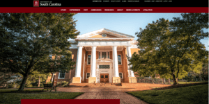
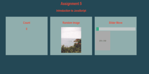
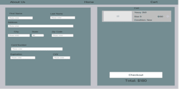

Assignments
Assignment 1 - Basic HTML
.png)
This is a very basic website about Lebron James using only html.
Assignment 2 - Basic CSS
.png)
This is a website about Loving Life that uses html and basic CSS skills.
Assignment 3 - Page Layout

I learned about flexboxes and applied them to this website to make it compatible with small screens.
Assignment 4 - Recreate CSS
I honed in on my html and CSS skills and recreated a UofSC webpage
Assignment 5 - Intro to JavaScript
I was introduced to javascript and used this knowledge to create a counter, apage refresher, and working slider
Project
Part 1 - Topic Selection
.png)
My project is called ShoeSaver and it is used by sneaker resellers to keep track of their inventory.
Part 2 - WireFrames
I made a wireframe and it takes you through my vision of the final site.
Part 3 - Html and CSS

I created the majority of the html and css for my project.
Part 4 - Color,Pictures,and Text
I finalized all of the content on the pages, excluding forms. I also changed code to make the site more functional and user friendly on different screen sizes.